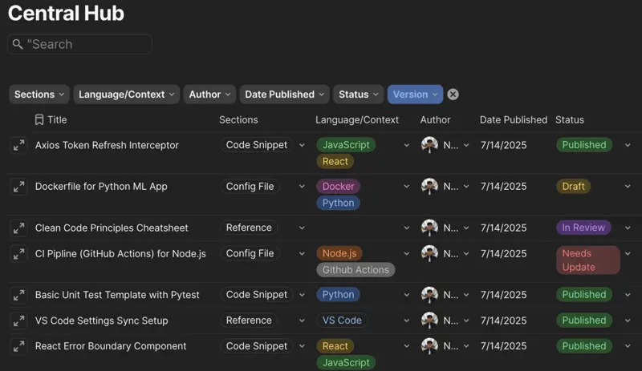

PNB Developer Knowledge Hub
Enterprise Tooling · Technical Documentation System
An internal documentation platform engineered for Permodalan Nasional Berhad (PNB) to solve scattered SOPs and reduce developer onboarding friction. Designed custom regex formulas for Coda to enable full-text indexing and search keyword highlighting across all code snippets, APIs, and guides. Executed a platform comparison (Notion vs. Coda) that slashed licensing costs by over 80% while restoring content-level searchability.